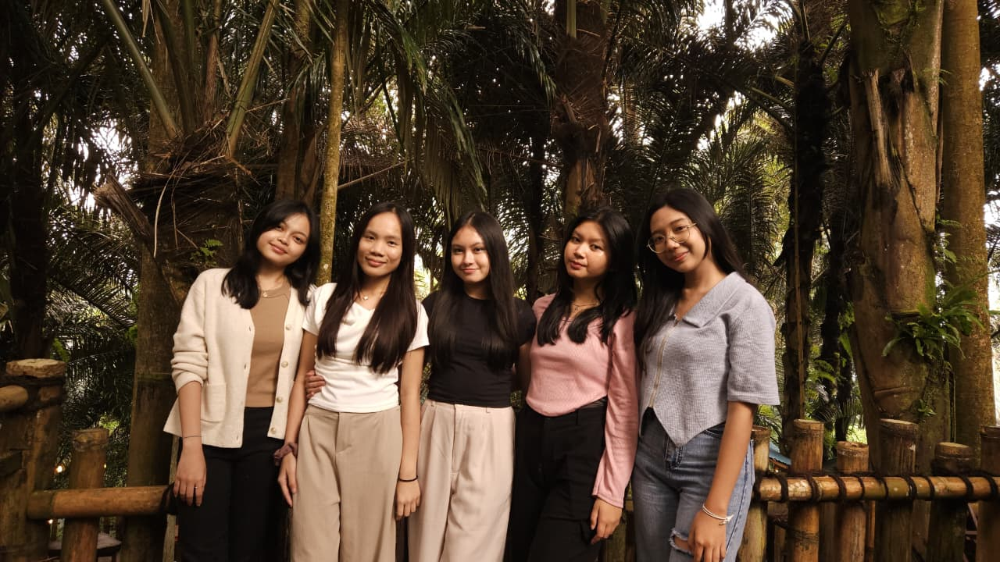

✦ Perjalanan · Akademik · Unsrat
Lebih dari Sekadar Coding: Cerita Perjalanan di Informatika Unsrat
Menjadi mahasiswa Informatika di Universitas Sam Ratulangi bukan hanya soal baris kode. Bersama teman-teman seperjuangan, saya belajar bahwa kolaborasi dan solidaritas adalah kunci utama untuk melewati setiap praktikum dan tugas besar yang menantang.